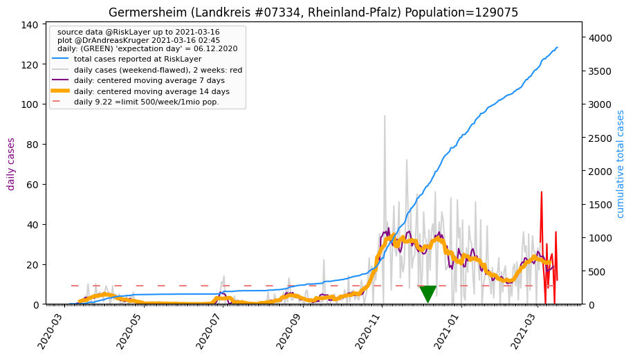
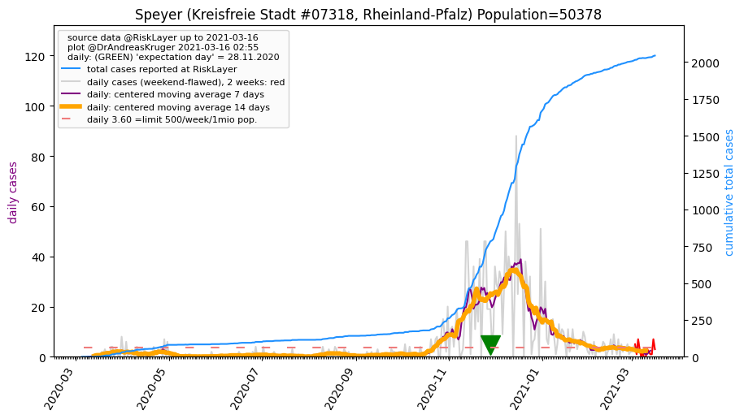
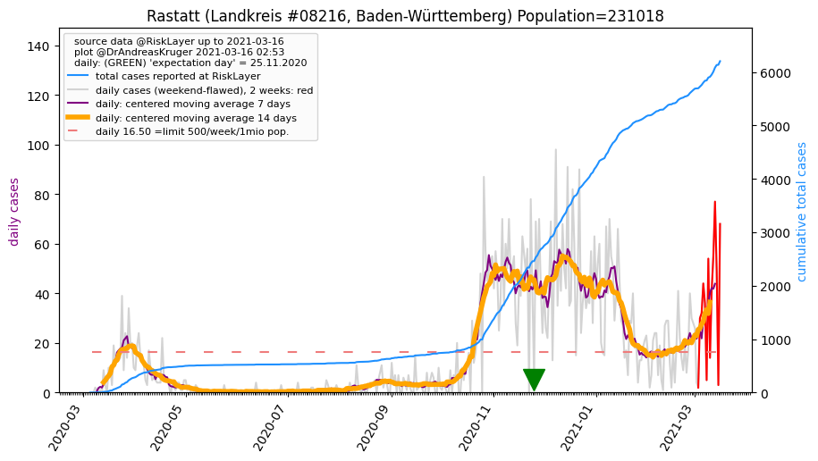
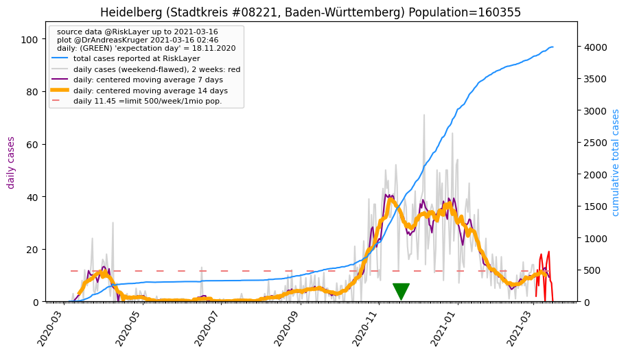
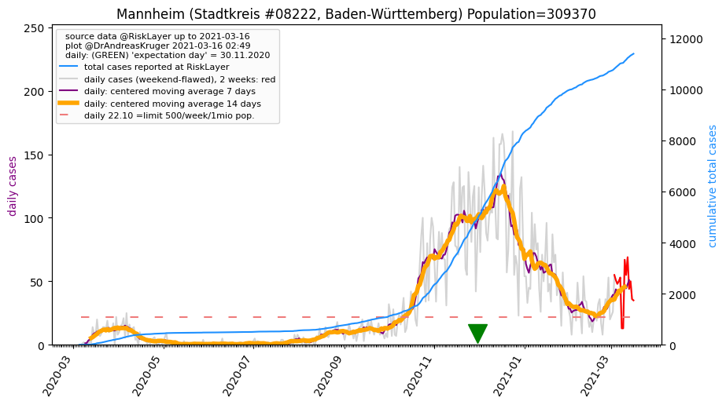
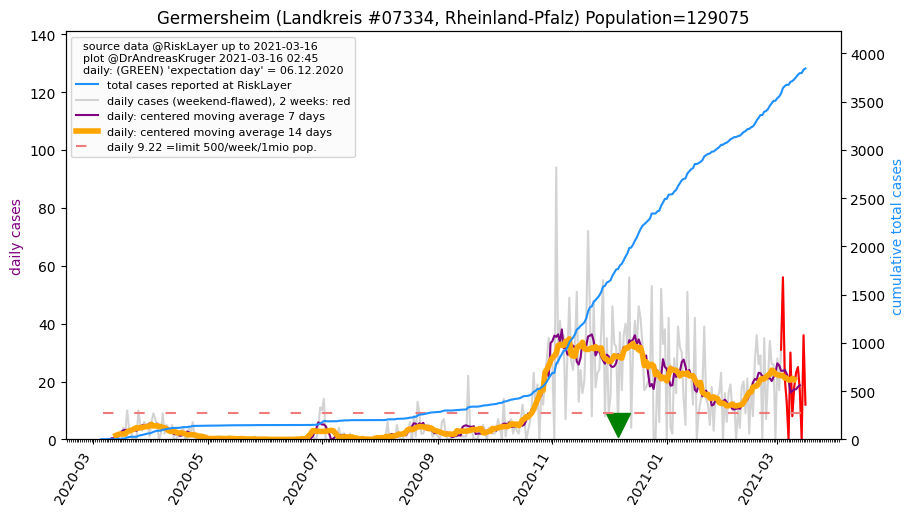
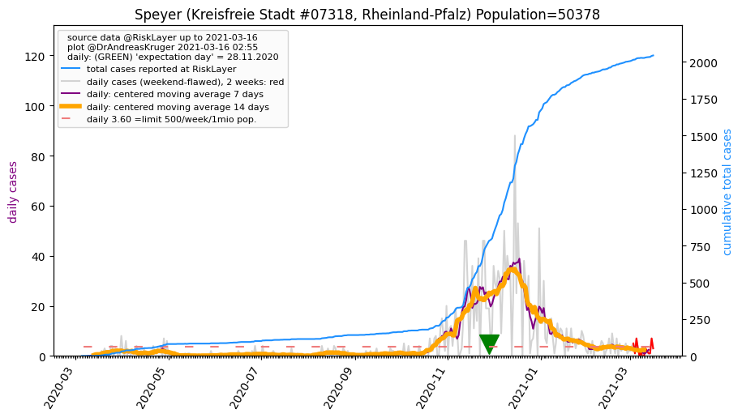
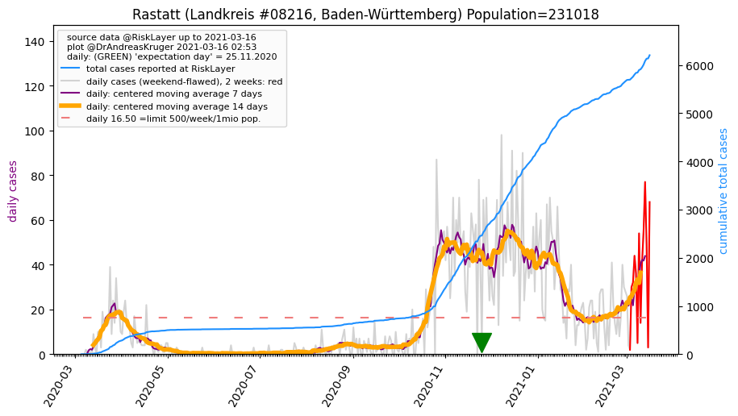
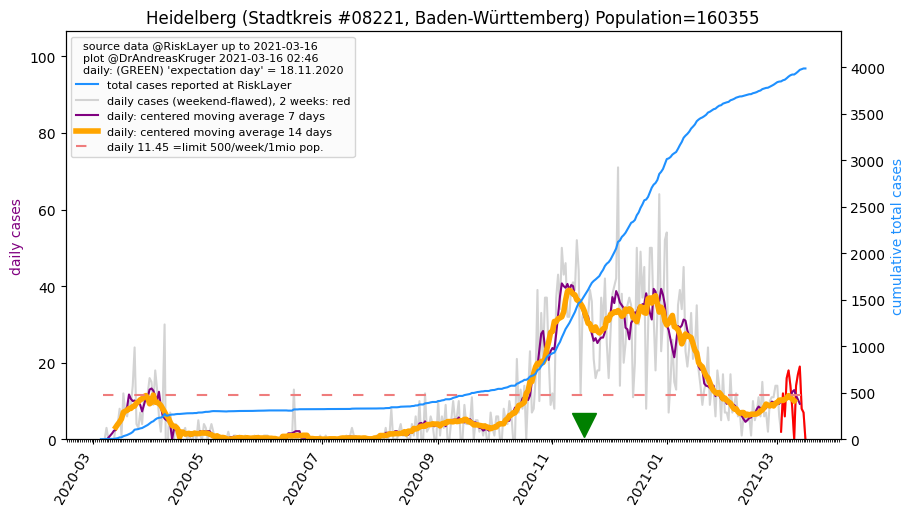
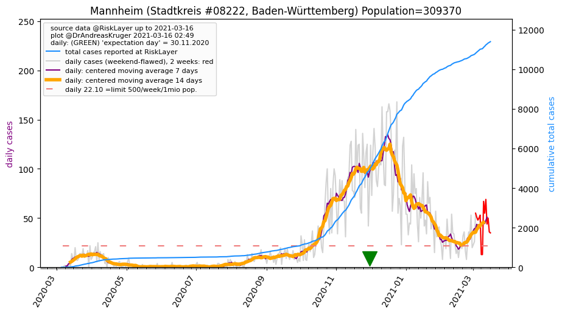

")
")
")
")
")

")
")

")
")
")
")
")


_KS (47.1 km)")
")
")
")
| Germersheim_LK (0.0 km)  |
Südliche Weinstraße_LK (16.7 km) |
Karlsruhe_SK (16.8 km) |
Landau in der Pfalz_KS (18.7 km) |
Karlsruhe_LK (23.4 km) |
| Neustadt an der Weinstraße_KS (26.0 km) |
Speyer_KS (27.5 km)  |
Rhein-Pfalz-Kreis_LK (34.5 km) |
Bad Dürkheim_LK (38.8 km) |
Rastatt_LK (39.4 km)  |
| Baden-Baden_SK (40.9 km) |
Ludwigshafen am Rhein_KS (42.2 km) |
Enzkreis_LK (42.3 km) |
Pforzheim_SK (43.3 km) |
Südwestpfalz_LK (44.1 km) |
| Heidelberg_SK (45.8 km)  |
Mannheim_SK (46.5 km)  |
Frankenthal (Pfalz)_KS (47.1 km) |
Rhein-Neckar-Kreis_LK (47.2 km) |
Pirmasens_KS (48.4 km) |
| Kaiserslautern_KS (49.9 km) |
All plots are regenerated with new data every night. Beware this temporary hotspot is an experimental page - it might get removed, so please do not link to it. Instead link to project http://tiny.cc/cov19de.